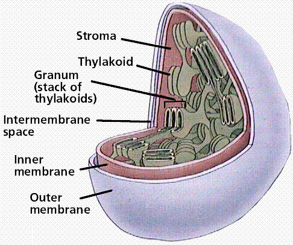

CELLS II: CELLULAR ORGANIZATION
Table of Contents
Life exhibits varying degrees of organization.
Atoms are organized into molecules, molecules into organelles, and
organelles into cells, and so on. According to the Cell Theory, all
living things are composed of one or more cells, and the functions of
a multicellular organism are a consequence of the types of cells it
has. Cells fall into two broad groups: prokaryotes and eukaryotes.
Prokaryotic cells are smaller (as a general rule) and lack much of
the internal compartmentalization and complexity of eukaryotic cells.
No matter which type of cell we are considering, all cells have
certain features in common, such as a cell membrane, DNA and RNA,
cytoplasm, and ribosomes. Eukaryotic cells have a great variety of
organelles and structures.
The shapes of cells are quite varied with some,
such as neurons,
being longer than they are wide and others, such as parenchyma
(a common type of plant cell) and erythrocytes
(red blood cells) being equidimensional. Some cells are encased in a
rigid wall, which constrains their shape, while others have a
flexible cell membrane (and no rigid cell wall).
The size of cells is also related to their
functions. Eggs (or to use the latin word, ova)
are very large, often being the largest cells an organism produces.
The large size of many eggs is related to the process of development
that occurs after the egg is fertilized, when the contents of the egg
(now termed a zygote)
are used in a rapid series of cellular divisions, each requiring
tremendous amounts of energy that is available in the zygote cells.
Later in life the energy must be acquired, but at first a sort of
inheritance/trust fund of energy is used.
Cells range in size from small bacteria to large,
unfertilized eggs laid by birds and dinosaurs. The realtive size
ranges of biological things is shown in Figure 1. In science we use
the metric system for measuring. Here are some measurements and
convesrions that will aid your understanding of biology.
1 meter = 100 cm = 1,000 mm = 1,000,000 µm =
1,000,000,000 nm
1 centimenter (cm) = 1/100 meter = 10
mm
1 millimeter (mm) = 1/1000 meter = 1/10
cm
1 micrometer (µm) = 1/1,000,000 meter
= 1/10,000 cm
1 nanometer (nm) = 1/1,000,000,000 meter =
1/10,000,000 cm
|
Figure 1. Sizes of
viruses, cells, and organisms. Images
from Purves et al., Life: The Science of Biology, 4th
Edition, by Sinauer Associates (www.sinauer.com)
and WH Freeman (www.whfreeman.com),
used with permission.
|
|
|
|
|
The cell membrane functions as a semi-permeable
barrier, allowing a very few molecules across it while fencing the
majority of organically produced chemicals inside the cell. Electron
microscopic examinations of cell membranes have led to the
development of the lipid bilayer model (also referred to as the
fluid-mosaic
model). The most common molecule in the model is the phospholipid,
which has a polar (hydrophilic)
head and two nonpolar (hydrophobic)
tails. These phospholipids are aligned tail to tail so the nonpolar
areas form a hydrophobic region between the hydrophilic heads on the
inner and outer surfaces of the membrane. This layering is termed a
bilayer since an electron microscopic technique known as
freeze-fracturing is able to split the bilayer, shown in Figure 2.
|
Figure 2. Cell Membranes from Opposing
Neurons (TEM x436,740). This image is
copyright Dennis Kunkel at www.DennisKunkel.com,
used with permission.
|
|
|
Cholesterol is another important component of cell
membranes embedded in the hydrophobic areas of the inner (tail-tail)
region. Most bacterial cell membranes do not contain cholesterol.
Cholesterol aids in the flexibility of a cell membrane.
Proteins, shown in Figure 2, are suspended in the
inner layer, although the more hydrophilic areas of these proteins
"stick out" into the cells interior as well as outside the cell.
These proteins function as gateways that will allow certain molecules
to cross into and out of the cell by moving through open areas of the
protein channel. These integral proteins are sometimes known as
gateway proteins. The outer surface of the membrane will tend to be
rich in glycolipids, which have their hydrophobic tails embedded in
the hydrophobic region of the membrane and their heads exposed
outside the cell. These, along with carbohydrates attached to the
integral proteins, are thought to function in the recognition of
self, a sort of cellular identification system.
The contents (both chemical and organelles) of the
cell are termed protoplasm, and are further subdivided into
cytoplasm
(all of the protoplasm except the contents of the nucleus) and
nucleoplasm (all of the material, plasma and DNA etc., within the
nucleus).
Not all living things have cell
walls, most notably animals and many of
the more animal-like protistans. Bacteria have cell walls containing
the chemical peptidoglycan. Plant cells, shown in Figures 3 and 4,
have a variety of chemicals incorporated in their cell walls.
Cellulose,
a nondigestible (to humans anyway) polysaccharide is the most common
chemical in the plant primary cell wall. Some plant cells also have
lignin
and other chemicals embedded in their secondary walls.
The cell wall is located outside the plasma
membrane. Plasmodesmata
are connections through which cells communicate chemically with each
other through their thick walls. Fungi and many protists have cell
walls although they do not contain cellulose, rather a variety of
chemicals (chitin
for fungi).
Animal cells, shown in Figure 5, lack a cell wall,
and must instead rely on their cell membrane to maintain the
integrity of the cell. Many protistans also lack cell walls, using
variously modified cell membranes o act as a boundary to the inside
of the cell.
|
Figure 3. Structure of a typical plant
cell. Image from Purves et al.,
Life: The Science of Biology, 4th Edition, by Sinauer
Associates (www.sinauer.com)
and WH Freeman (www.whfreeman.com),
used with permission.
|
|
|
|
Figure 4. Lily Parenchyma Cell
(cross-section) (TEM x7,210). Note
the large
nucleus
and
nucleolus
in the center of the cell,
mitochondria
and
plastids
in the cytoplasm. This image is copyright Dennis Kunkel at
www.DennisKunkel.com,
used with permission.
|

|
|
Figure 5. Liver Cell (TEM x9,400).
This image is copyright Dennis Kunkel. This
image is copyright Dennis Kunkel at www.DennisKunkel.com,
used with permission.
|
|
|
The nucleus, shown in Figures 6 and 7, occurs only
in eukaryotic
cells. It is the location for most of the nucleic acids a cell makes,
such as DNA and RNA. Danish biologist Joachim Hammerling carried out
an important experiment in 1943. His work (click here
for a diagram) showed the role of the nucleus in controlling the
shape and features of the cell. Deoxyribonucleic acid, DNA, is the
physical carrier of inheritance and with the exception of
plastid
DNA (cpDNA and mDNA, found in the chloroplast and mitochondrion
respectively) all DNA is restricted to the nucleus. Ribonucleic acid,
RNA, is formed in the nucleus using the DNA base sequence as a
template. RNA moves out into the cytoplasm where it functions in the
assembly of proteins. The nucleolus
is an area of the nucleus (usually two nucleoli per nucleus) where
ribosomes
are constructed.
|
Figure 6. Structure of the nucleus. Note
the chromatin, uncoiled DNA that occupies the space within
the nuclear envelope. Image from
Purves et al., Life: The Science of Biology, 4th
Edition, by Sinauer Associates (www.sinauer.com)
and WH Freeman (www.whfreeman.com),
used with permission.
|
|
|
|
Figure 7. Liver cell nucleus and
nucleolus (TEM x20,740).
Cytoplasm,
mitochondria,
endoplasmic
reticulum, and
ribosomes
also shown.This image is copyright Dennis Kunkel at
www.DennisKunkel.com,
used with permission.
|
|
|
The nuclear envelope, shown in Figure 8, is a
double-membrane structure. Numerous pores occur in the envelope,
allowing RNA and other chemicals to pass, but the DNA not to pass.
|
Figure 8.
Structure of the nuclear envelope and
nuclear pores.
Image from Purves et al., Life:
The Science of Biology, 4th Edition, by Sinauer
Associates (www.sinauer.com)
and WH Freeman (www.whfreeman.com),
used with permission.
|
|
|
|
Figure 9. Nucleus
with Nuclear Pores (TEM x73,200).
The
cytoplasm also contains numerous
ribosomes.
This image is copyright Dennis Kunkel at www.DennisKunkel.com,
used with permission.
|
|
|
The cytoplasm was defined earlier as the material
between the plasma membrane (cell membrane) and the nuclear envelope.
Fibrous proteins that occur in the cytoplasm, referred to as the
cytoskeleton
maintain the shape of the cell as well as anchoring organelles,
moving the cell and controlling internal movement of structures.
Elements that comprose the cytoskeleton are shown in Figure 10.
Microtubules
function in cell division and serve as a "temporary scaffolding" for
other organelles. Actin
filaments are thin threads that function in cell division and cell
motility. Intermediate filaments are between the size of the
microtubules and the actin filaments.
|
Figure 10. Actin and tubulin components
of the cytoskeleton. Image from
Purves et al., Life: The Science of Biology, 4th
Edition, by Sinauer Associates (www.sinauer.com)
and WH Freeman (www.whfreeman.com),
used with permission.
|
|
|
Vacuoles and vesicles |
Back to Top
Vacuoles
are single-membrane organelles that are essentially part of the
outside that is located within the cell. The single membrane is known
in plant cells as a tonoplast. Many organisms will use vacuoles as
storage areas. Vesicles are much smaller than vacuoles and function
in transporting materials both within and to the outside of the
cell.
Ribosomes
are the sites of protein synthesis. They are not membrane-bound and
thus occur in both prokaryotes and eukaryotes. Eukaryotic ribosomes
are slightly larger than prokaryotic ones. Structurally, the ribosome
consists of a small and larger subunit, as shown in Figure 11. .
Biochemically, the ribosome consists of ribosomal
RNA (rRNA) and some 50 structural
proteins. Often ribosomes cluster on the endoplasmic
reticulum, in which case they resemble a
series of factories adjoining a railroad line. Figure 12 illustrates
the many ribosomes attached to the endoplasmic reticulum. Click here
for Ribosomes
(More than you ever wanted to know about ribosomes!)
|
Figure 11. Structure of the
ribosome. Image from Purves et al.,
Life: The Science of Biology, 4th Edition, by Sinauer
Associates (www.sinauer.com)
and WH Freeman (www.whfreeman.com),
used with permission.
|
|
|
|
Figure 12.
Ribosomes and Polyribosomes - liver cell
(TEM x173,400). This image is copyright Dennis Kunkel at
www.DennisKunkel.com,
used with permission.
|
|
|
Endoplasmic reticulum |
Back to Top
Endoplasmic
reticulum, shown in Figure 13 and 14, is a
mesh of interconnected membranes that serve a function involving
protein synthesis and transport. Rough endoplasmic reticulum (Rough
ER) is so-named because of its rough appearance due to the numerous
ribosomes that occur along the ER. Rough ER connects to the nuclear
envelope through which the messenger RNA (mRNA) that is the blueprint
for proteins travels to the ribosomes. Smooth ER; lacks the ribosomes
characteristic of Rough ER and is thought to be involved in transport
and a variety of other functions.
|
Figure 13. The endoplasmic reticulum.
Rough endoplasmic reticulum is on the left, smooth
endoplasmic reticulum is on the right.
Image from Purves et al., Life: The
Science of Biology, 4th Edition, by Sinauer Associates
(www.sinauer.com)
and WH Freeman (www.whfreeman.com),
used with permission.
|
|
|
|
Figure 14.
Rough Endoplasmic
Reticulum with
Ribosomes
(TEM x61,560). This image is copyright Dennis Kunkel at
www.DennisKunkel.com,
used with permission.
|
|
|
Golgi Apparatus and
Dictyosomes | Back to Top
Golgi
Complexes, shown in Figure 15 and 16, are
flattened stacks of membrane-bound sacs. Italian biologist Camillo
Golgi discovered these structures in the late 1890s, although their
precise role in the cell was not deciphered until the mid-1900s .
Golgi function as a packaging plant, modifying vesicles produced by
the rough endoplasmic reticulum. New membrane material is assembled
in various cisternae (layers) of the golgi.
|
Figure 15.
Structure of the Golgi apparatus and its
functioning in vesicle-mediated transport.
Images from Purves et al., Life: The
Science of Biology, 4th Edition, by Sinauer Associates
(www.sinauer.com)
and WH Freeman (www.whfreeman.com),
used with permission.
|
|
|
|
|
|
Figure 16. Golgi Apparatus in a plant
parenchyma cell from Sauromatum guttatum (TEM
x145,700). Note the numerous vesicles near the Golgi. This
image is copyright Dennis Kunkel at www.DennisKunkel.com,
used with permission.
|
|
|
Lysosomes,
shown in Figure 17, are relatively large vesicles formed by the
Golgi. They contain hydrolytic enzymes that could destroy the cell.
Lysosome contents function in the extracellular breakdown of
materials.
|
Figure 17. Role of the Golgi in forming
lysosomes. Image from Purves et al.,
Life: The Science of Biology, 4th Edition, by Sinauer
Associates (www.sinauer.com)
and WH Freeman (www.whfreeman.com),
used with permission.
|
|
|
Mitochondria
contain their own DNA (termed mDNA) and are thought to represent
bacteria-like organisms incorporated into eukaryotic cells over 700
million years ago (perhaps even as far back as 1.5 billion years
ago). They function as the sites of energy release (following
glycolysis in the cytoplasm) and ATP formation (by chemiosmosis).
The mitochondrion has been termed the powerhouse of the cell.
Mitochondria are bounded by two membranes. The inner membrane folds
into a series of cristae,
which are the surfaces on which adenosine triphosphate (ATP) is
generated. The matrix is the area of the mitochondrion surrounded by
the inner mitochondrial membrane. Ribosomes and mitochondrial DNA are
found in the matrix. The significance of these features will be
discussed below. The structure of mitochondria is shown in Figure 18
and 19.
|
Figure 18. Structure of a
mitochondrion. Note the various
infoldings of the mitochondrial inner membrane that produce
the cristae. Image from Purves et al., Life: The Science
of Biology, 4th Edition, by Sinauer Associates
(www.sinauer.com)
and WH Freeman (www.whfreeman.com),
used with permission.
|
|
|
|
Figure 19. Muscle Cell Mitochondrion (TEM
x190,920). This image is copyright
Dennis Kunkel at www.DennisKunkel.com,
used with permission.
|
|
|
Mitochondria and endosymbiosis
During the 1980s, Lynn Margulis proposed the
theory of endosymbiosis to explain the origin of mitochondria and
chloroplasts from permanent resident prokaryotes. According to this
idea, a larger prokaryote (or perhaps early eukaryote) engulfed or
surrounded a smaller prokaryote some 1.5 billion to 700 million years
ago. Steps in this sequence are illustrated in Figure 20.
|
Figure 20. The
basic events in endosymbiosis. Image
from Purves et al., Life: The Science of Biology, 4th
Edition, by Sinauer Associates (www.sinauer.com)
and WH Freeman (www.whfreeman.com),
used with permission.
|

|
Instead of digesting the smaller organisms the
large one and the smaller one entered into a type of symbiosis
known as mutualism,
wherein both organisms benefit and neither is harmed. The larger
organism gained excess ATP provided by the "protomitochondrion" and
excess sugar provided by the "protochloroplast", while providing a
stable environment and the raw materials the endosymbionts required.
This is so strong that now eukaryotic cells cannot survive without
mitochondria (likewise photosynthetic eukaryotes cannot survive
without chloroplasts), and the endosymbionts can not survive outside
their hosts. Nearly all eukaryotes have mitochondria. Mitochondrial
division is remarkably similar to the prokaryotic methods that will
be studied later in this course. A
summary of the theory is available by clicking
here.
Plastids are also membrane-bound organelles that
only occur in plants and photosynthetic eukaryotes. Leucoplasts, also
known as amyloplasts (and shown in Figure 21) store starch, as well
as sometimes protein or oils. Chromoplasts
store pigments associated with the bright colors of flowers and/or
fruits.
Chloroplasts, illustrated in Figures 22 and 23,
are the sites of photosynthesis in eukaryotes. They contain
chlorophyll,
the green pigment necessary for photosynthesis to occur, and
associated accessory pigments (carotenes
and xanthophylls) in photosystems
embedded in membranous sacs, thylakoids
(collectively a stack of thylakoids are a granum [plural =
grana])
floating in a fluid termed the stroma.
Chloroplasts contain many different types of accessory pigments,
depending on the taxonomic group of the organism being
observed.
|
Figure 22. Structure of the
chloroplast. Image from Purves et
al., Life: The Science of Biology, 4th Edition, by
Sinauer Associates (www.sinauer.com)
and WH Freeman (www.whfreeman.com),
used with permission.
|
|

|
|
Figure 23. Chloroplast from red alga
(Griffthsia spp.). x5,755--(Based on an image size of
1 inch in the narrow dimension). This
image is copyright Dennis Kunkel at www.DennisKunkel.com,
used with permission.
|
|
|
Chloroplasts and endosymbiosis
Like mitochondria, chloroplasts have their own
DNA, termed cpDNA. Chloroplasts of Green
Algae (Protista) and Plants (descendants
of some of the Green Algae) are thought to have originated by
endosymbiosis of a prokaryotic alga similar to living
Prochloron (the sole genus present in the Prochlorobacteria,
shown in Figure 24). Chloroplasts of Red
Algae (Protista) are very similar
biochemically to cyanobacteria
(also known as blue-green bacteria [algae to chronologically
enhanced folks like myself :)]). Endosymbiosis is also invoked
for this similarity, perhaps indicating more than one endosymbiotic
event occurred.
|
Figure 24. Prochloron, a
photosynthetic bacteria, reveals the presence of numerous
thylakoids in the transmission electron micrograph on the
left. Prochloron occurs in long filaments, as shown
by the light micrograph on the right below. Image from
http://www.cas.muohio.edu/~wilsonkg/bot191/mouseth/m19p32.jpg.
|
|
|
Cell movement; is both internal, referred to as
cytoplasmic streaming, and external, referred to as motility.
Internal movements of organelles are governed by actin filaments and
other components of the cytoskeleton. These filaments make an area in
which organelles such as chloroplasts can move. Internal movement is
known as cytoplasmic streaming. External movement of cells is
determined by special organelles for locomotion.
The cytoskeleton is a network of connected
filaments and tubules. It extends from the nucleus to the plasma
membrane. Electron microscopic studies showed the presence of an
organized cytoplasm. Immunofluorescence microscopy identifies protein
fibers as a major part of this cellular feature. The cytoskeleton
components maintain cell shape and allow the cell and its organelles
to move.
Actin filaments, shown in Figure 25, are long,
thin fibers approximately seven nm in diameter. These filaments occur
in bundles or meshlike networks. These filaments are polar, meaning
there are differences between the ends of the strand. An actin
filament consists of two chains of globular actin monomers twisted to
form a helix. Actin filaments play a structural role, forming a dense
complex web just under the plasma membrane. Actin filaments in
microvilli of intestinal cells act to shorten the cell and thus to
pull it out of the intestinal lumen. Likewise, the filaments can
extend the cell into intestine when food is to be absorbed. In plant
cells, actin filaments form tracts along which chloroplasts
circulate.
Actin filaments move by interacting with myosin,
The myosin combines with and splits ATP, thus binding to actin and
changing the configuration to pull the actin filament forward.
Similar action accounts for pinching off cells during cell division
and for amoeboid movement.
|
Figure 25. Skeletal muscle fiber with
exposed intracellular actin myosin filaments. The muscle
fiber was cut perpendicular to its length to expose the
intracellular actin myosin filaments. SEM X220. This image
is copyright Dennis Kunkel at www.DennisKunkel.com,
used with permission.
|
|
|
Intermediate filaments are between eight and
eleven nm in diameter. They are between actin filaments and
microtubules in size. The intermediate fibers are rope-like
assemblies of fibrous polypeptides. Some of them support the nuclear
envelope, while others support the plasma membrane, form cell-to-cell
junctions.
Microtubules are small hollow cylinders (25 nm in
diameter and from 200 nm-25 µm in length). These microtubules
are composed of a globular protein tubulin. Assembly brings the two
types of tubulin (alpha and beta) together as dimers, which arrange
themselves in rows.
In animal cells and most protists, a structure
known as a centrosome occurs. The centrosome contains two centrioles
lying at right angles to each other. Centrioles are short cylinders
with a 9 + 0 pattern of microtubule triplets. Centrioles serve as
basal bodies for cilia and flagella. Plant and fungal cells have a
structure equivalent to a centrosome, although it does not contain
centrioles.
Cilia are short, usually numerous, hairlike
projections that can move in an undulating fashion (e.g., the
protzoan Paramecium, the cells lining the human upper
respiratory tract). Flagella are longer, usually fewer in number,
projections that move in whip-like fashion (e.g., sperm cells). Cilia
and flagella are similar except for length, cilia being much shorter.
They both have the characteristic 9 + 2 arrangement of microtubules
shown in figures 26.
|
Figure 26. Cilia from an epithelial cell
in cross section (TEM x199,500). Note
the 9 + 2 arrangement of cilia. This
image is copyright Dennis Kunkel at www.DennisKunkel.com,
used with permission.
|
|
|
Cilia and flagella move when the microtubules
slide past one another. Both oif these locomotion structures have a
basal body at base with thesame arrangement of microtubule triples as
centrioles. Cilia and flagella grow by the addition of tubulin dimers
to their tips.
Flagella work as whips pulling (as in
Chlamydomonas
or Halosphaera)
or pushing (dinoflagellates,
a group of single-celled Protista) the organism through the water.
Cilia work like oars on a viking longship (Paramecium has
17,000 such oars covering its outer surface). The movement of these
structures is shown in Figure 27.
|
Figure 27.
Movement of cilia and flagella.
Image from Purves et al., Life: The
Science of Biology, 4th Edition, by Sinauer Associates
(www.sinauer.com)
and WH Freeman (www.whfreeman.com),
used with permission.
|
|
|
Not all cells use cilia or flagella for movement.
Some, such as Amoeba, Chaos (Pelomyxa) and human
leukocytes
(white blood cells), employ pseudopodia
to move the cell. Unlike cilia and flagella, pseudopodia are not
structures, but rather are associated with actin near the moving edge
of the cell. The formation of a pseudopod is shown in Figure 28.
|
Figure 28.
Formation and functioning of a pseudopod by
an amoeboid cell. Image from Purves
et al., Life: The Science of Biology, 4th Edition, by
Sinauer Associates (www.sinauer.com)
and WH Freeman (www.whfreeman.com),
used with permission.
|

|
- Give the function and cellular location of the following basic
eukaryotic organelles and structures: cell membrane, nucleus,
endoplasmic reticulum, Golgi bodies, lysosomes, mitochondria,
ribosomes, chloroplasts, vacuoles, and cell walls.
- A micrometer is one-millionth of a meter long. A nanometer is
one-billionth of a meter long. How many micrometers tall are
you?
- Describe the function of the nuclear envelope and
nucleolus.
- Describe the details of the structure of the chloroplast, the
site of photosynthesis.
- Mature, living plant cells often have a large, fluid-filled
central vacuole that can store amino acids, sugars, ions, and
toxic wastes. Animal cells generally lack large vacuoles. How do
animal cells perform these functions?
- Microtubules, microfilaments, and intermediate filaments are
all main components of the cytoskeleton.
- Flagella and cilia propel eukaryotic cells through their
environment; the microtubule organization in these organelles is a
9+2 array.
- There are ____ micrometers (µm) in one millimeter (mm).
a) 1; b) 10; c) 100; d) 1000; e) 1/1000
- Human cells have a size range between ___ and ___ micrometers
(µm). a) 10-100; b) 1-10; c) 100-1000; d) 1/10-1/1000
- Chloroplasts and bacteria are ___ in size. a) similar; b) at
different ends of the size range; c) exactly the same; d) none of
these.
- The plasma membrane does all of these except ______. a)
contains the hereditary material; b) acts as a boundary or border
for the cytoplasm; c) regulates passage of material in and out of
the cell; d) functions in the recognition of self
- Which of these materials is not a major component of the
plasma membrane? a) phospholipids; b) glycoproteins; c) proteins;
d) DNA
- Cells walls are found in members of these kingdoms, except for
___, which all lack cell walls. a) plants; b) animals; c)
bacteria; d) fungi
- The polysaccharide ___ is a major component of plan cell
walls. a) chitin; b) peptidoglycan; c) cellulose; d) mannitol; e)
cholesterol
- Plant cells have ___ and ___, which are not present in animal
cells. a) mitochondria, chloroplasts; b) cell membranes, cell
walls; c) chloroplasts, nucleus; d) chloroplasts, cell wall
- The ___ is the membrane enclosed structure in eukaryotic cells
that contains the DNA of the cell. a) mitochondrion; b)
chloroplast; c) nucleolus; d) nucleus
- Ribosomes are constructed in the ___. a) endoplasmic
reticulum; b) nucleoid; c) nucleolus; d) nuclear pore
- Rough endoplasmic reticulum is the area in a cell where ___
are synthesized. a) polysaccharides; b) proteins; c) lipids; d)
DNA
- The smooth endoplasmic reticulum is the area in a cell where
___ are synthesized. a) polysaccharides; b) proteins; c) lipids;
d) DNA
- The mitochondrion functions in ____. a) lipid storage; b)
protein synthesis; c) photosynthesis; d) DNA replication; e) ATP
synthesis
- The thin extensions of the inner mitochondrial membrane are
known as _____. a) cristae; b) matrix; c) thylakoids; d)
stroma
- The chloroplast functions in ____. a) lipid storage; b)
protein synthesis; c) photosynthesis; d) DNA replication; e) ATP
synthesis
- Which of these cellular organelles have their own DNA? a)
chloroplast; b) nucleus; c) mitochondrion; d) all of these
- The theory of ___ was proposed to explain the possible origin
of chloroplasts and mitochondria. a) evolution; b) endosymbiosis;
c) endocytosis; d) cells
- Long, whiplike microfibrils that facilitate movement by cells
are known as ___. a) cilia; b) flagella; c) leather; d)
pseudopodia
Text ©1992, 1994, 1997, 1998, 1999, 2000, 2001, 2007, by M.J.
Farabee, all rights reserved. Use for educational purposes is
heartily encouraged.
Back to Table of Contents
| Go to TRANSPORT
IN AND OUT OF CELLS
Email: mj.farabee@emcmail.maricopa.edu
Last modified:
The URL of this page is:
{kind=link}
{kind=link}